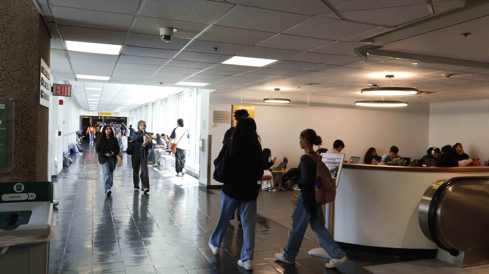

Orginal Photo:
This photo depicts a hallway filled with students as they make there way to there next class, home or lunch. I chose this image because i believe it has alot to say, it shows people sitting, walking, standing. There is so much going on in such a simple photo. There many different stories to be told about what all these individuals were doing, if they felt stressed or happy. My idea behind this was to show the student life at hunter college, i am new to this school and seeing the difference between my last college and this one, is interesting.